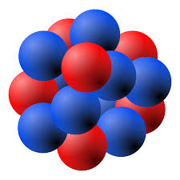
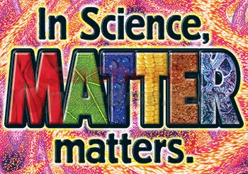

An Element

Well what is an element? It is a pure substance, something that cannot be broken down into smaller parts. Theoretically, it
can be broken down into smaller parts, but it would lose its properties. It will break down into protons, neutrons, and electrons.
Subsequently, these subatomic particles can be broken down into quarks and leptons.
What is Matter?

What are all these particles? The name "quark" might sound funny, but it is fundamental part of matter. Lets start with easiest concept
to understand, matter. Anything that occupies space is considered to be made of matter. A computer, or any electronical device that you are using to view this, takes up space, so therefore it is made of matter. To take up space means to have a volume and a mass. Matter is always made of atoms.